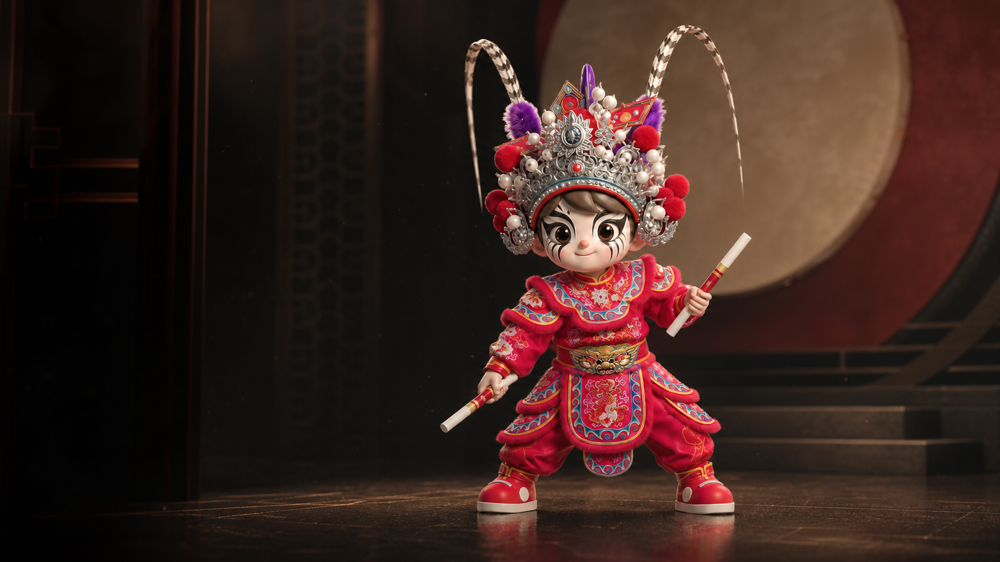

YINGGE DANCE · DIGITAL MUSEUM
国家级非物质文化遗产 英歌
影像、互动与知识档案，共同解释动作、阵法、人物和地方传承。
先看真实表演，再进入互动叙事；遇到不懂的内容，随时问英歌小槌。

从完整表演进入动作、阵形、人物与地方现场。
沿着互动叙事认识英歌，并随时返回博物馆继续参观。
围绕当前展品回答，并说明资料来源和适用范围。
每座展厅只解释一个主题，角色、声音、地域和证据不再混在同一页。
名录与标准确认基础事实，具体队伍和影像解释地方实践，口述资料保留时间、地点与授权边界。